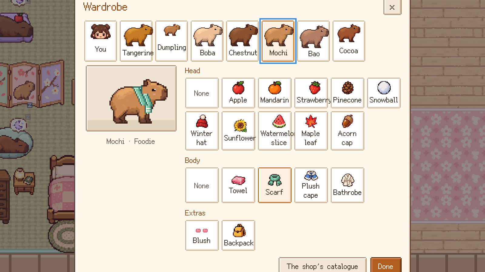

01 · Pixel-art life sim · 2026
Yuzu Onsen Capybaras
A cozy life sim in soft Japanese macaron colors. You help out at a capybara pet shop on the edge of a little hot-spring town in the mountains: look after seven capybaras, grow a garden, make friends around town and join a festival every week, through a first winter and then round the year.
- Role
- Lead developer with AI tools: direction, feedback and playtesting
- Status
- Free winter demo online; desktop app prepared for Steam, October 2026
- Platform
- Web browsers on computers and phones; a Windows and macOS desktop app
- Built with
- JavaScript, HTML canvas, Web Audio, Electron, Python tooling; Claude Code and AI image generation

What it is
The game is built around a capybara pet shop. Its seven capybaras each have a personality of their own and get on with their day whether you help or not: they nap, eat, swim among the pool floats, soak in the hot spring and sunbathe in the yard, with a small icon over each one’s head to show how it feels. You feed them, pat them, name them and dress them up, while customers and regulars drop in, pay and leave their stars.
Out of the shop’s door is the town. Thirteen townsfolk keep days of their own, each with tastes, a birthday, letters and three stories told as a friendship grows, and six neighbors on Pine Lantern Street have stories of their own. There is a garden to grow, a forest to forage and fish in, a notice board of requests, an old bathhouse to bring back to life, and a book of wishes that changes the town as you fill it: a ropeway up the mountain, a footbath by the square, an old inn opened again, a stage for the festivals.


A year in town
Time runs on a calendar of four seasons, each with its own art, weather, crops, fish, recipes and sounds, and the townsfolk dress for each one. Every week brings a festival, sixteen in all, six with a game or contest of their own:
- Winter: Snow Lantern Night, a capybara fashion show, a yuzu bath and New Year’s Eve.
- Spring: a doll festival on the stream, a blossom picnic, a spring fair with goldfish scooping, and a capybara race on Children’s Day.
- Summer: Tanabata wishes, blindfolded watermelon splitting, fireworks over the pond and paper lanterns on the stream.
- Autumn: moon viewing, catching falling leaves, a harvest festival with a prize for the finest vegetable, and a sweet-potato bonfire.
From the second year there is more: a rare seed at the co-op each season, a legendary fish each season in the pond or the lake, something new at every festival, and new stories for the neighbors.


Under the mountain
Under the mountain shrine, the old spring keepers’ tunnels go down thirty floors to the source of the town’s hot water. You knock open rocks with a little hammer for ore, crystals and fossils, find each ladder by its wisp of steam, ride the steam lifts and fish the underground pools. There are no monsters: just the warm dark and your lantern.



Trailer
Getting it ready to ship
- Any controls. Keyboard and mouse, a touch screen or a controller. With a controller, every button in every menu can be reached with the D-pad.
- Two languages. English and Simplified Chinese.
- Saves. The game saves every morning, in one of three save slots.
- A web demo. The browser version is a free demo of the first winter: 28 days and all four winter festivals. The full game unlocks with a key, checked by a small Cloudflare Worker, and the demo build leaves out the other seasons’ scenery, festivals, letters and dialogue, so editing the code can’t unlock them.
- A desktop app. An Electron build for Windows and macOS. The Windows build is prepared for Steam with 20 achievements, store art in both languages and the trailer; the Mac build waits on Apple’s notarization. The Steam release itself is still to come.
- Tests. 74 automated test suites with more than 3,000 checks: scripted play in Chromium, WebKit and Firefox, screenshot comparisons, and mutation testing, in which 720 deliberately planted bugs were all caught.
The desk pet
A spin-off app puts one of the shop’s capybaras on your desktop, a little like QQ Pet. It lives in a small transparent window that stays on top and ambles along the bottom of the screen by itself. Move the pointer over it for a toolbar: give it a snack, run it a hot bath, set out a paddling pool, put it down for a nap or dress it up from the shop’s wardrobe. Each of the seven capybaras moves in its own way, and the shy one shrinks back at first. It runs on macOS and Windows.
How it was made
Xinyue (Lily) Feng led the game’s development, with AI tools that the project credits openly. She built it with Claude Code, which wrote the JavaScript to her direction. The pixel art was generated with AI image tools, then cut out, shrunk onto a pixel grid and limited to a few colors each by the project’s own scripts, and the game’s text was written with the help of an AI language model. The music and sound effects are not recordings: the game’s own code composes and synthesizes them as it plays.
Her feedback on the first version shaped its look and feel: a pixel font and pixel-style dialogue boxes, English by default, sound that works on iPhones, a little bed and a scarf for the capybaras. The game is plain JavaScript with no engine or framework, drawn on an HTML canvas and played through the Web Audio API.
The capybaras, the town and its people are original to the game. The pixel font is Fusion Pixel Font by TakWolf, used under the SIL Open Font License.